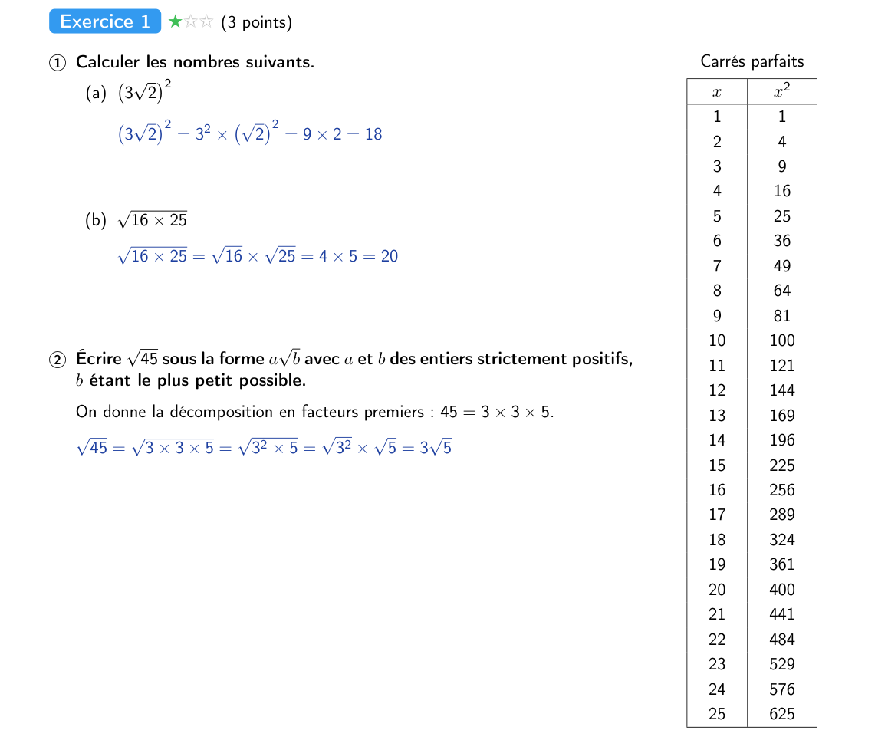
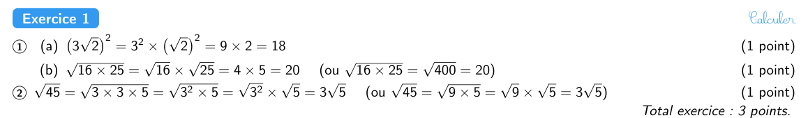
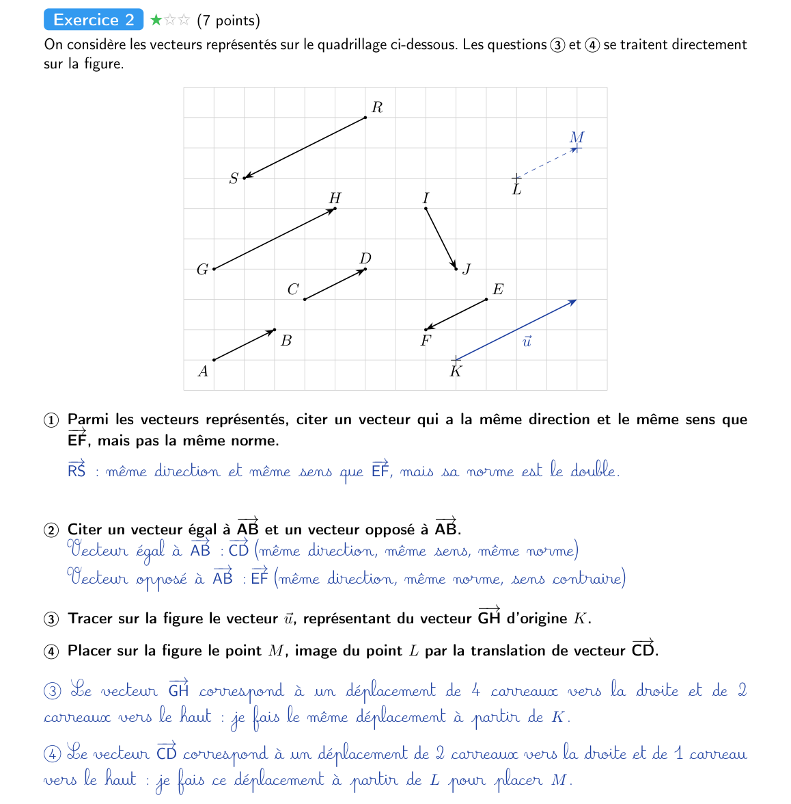
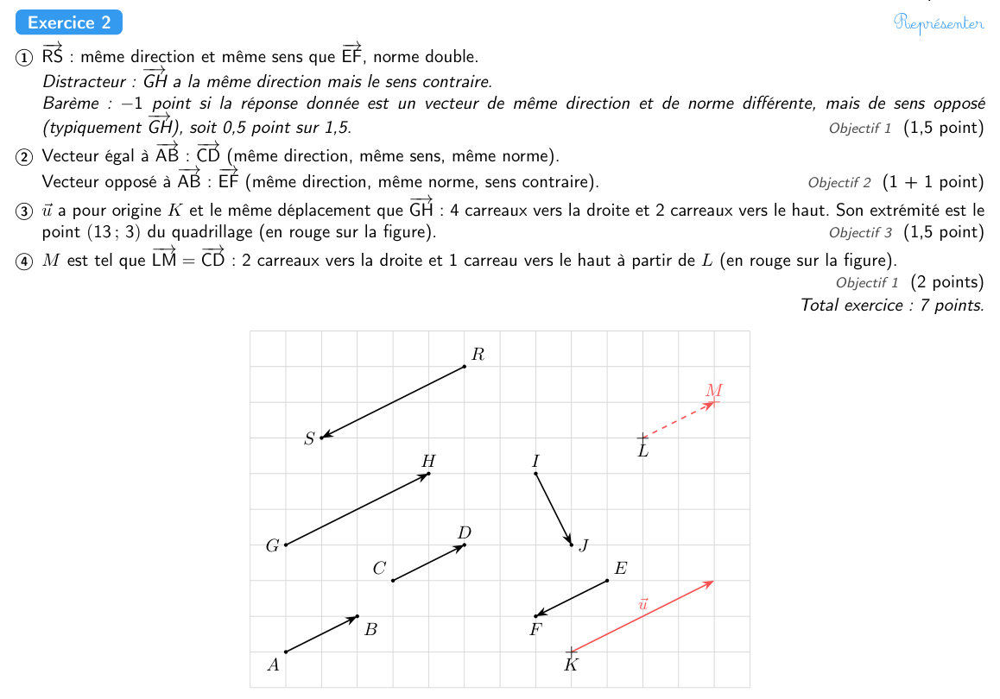
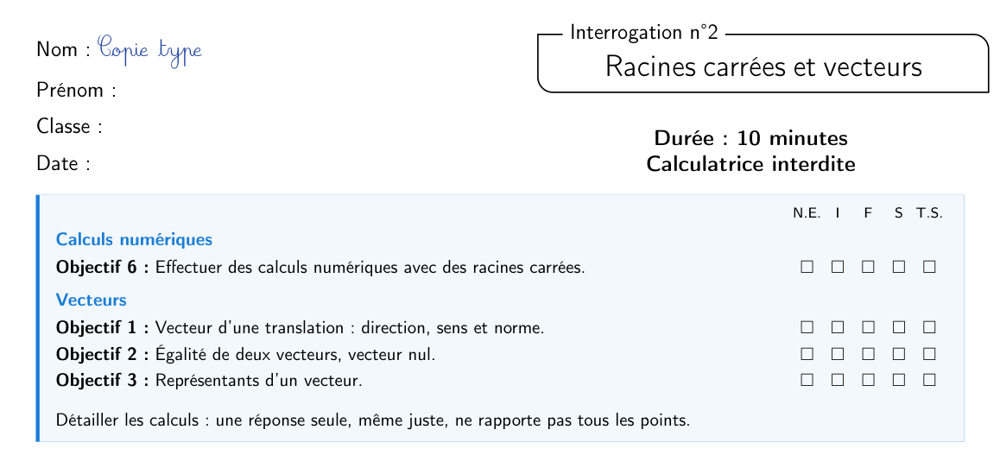
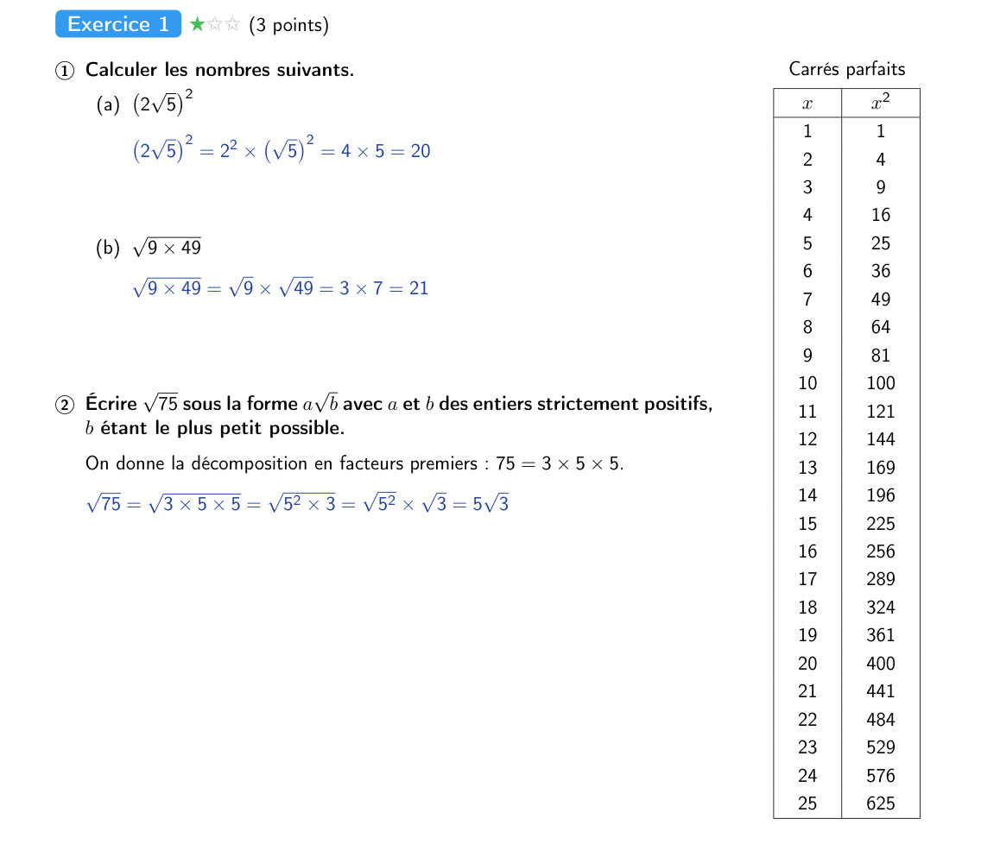
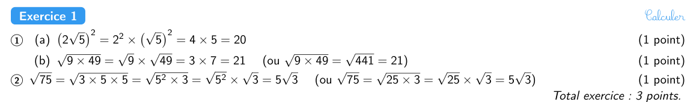
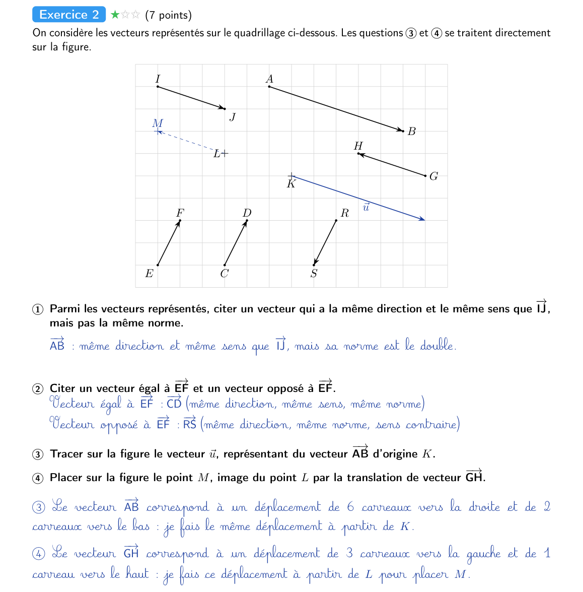

Racines carrées et vecteurs
Voici une copie type, complétée comme on l'attend de toi. Sous chaque exercice, ouvre la correction détaillée pour revoir la méthode pas à pas.










Version à imprimer : copie type et correction détaillée (PDF)